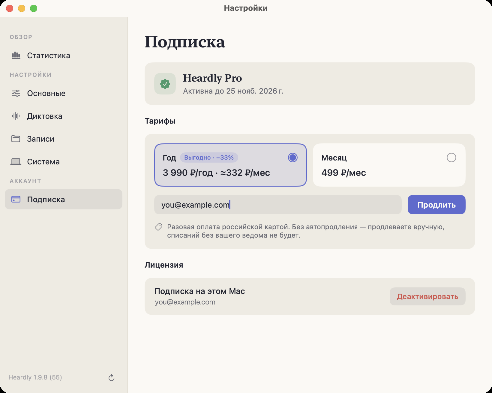
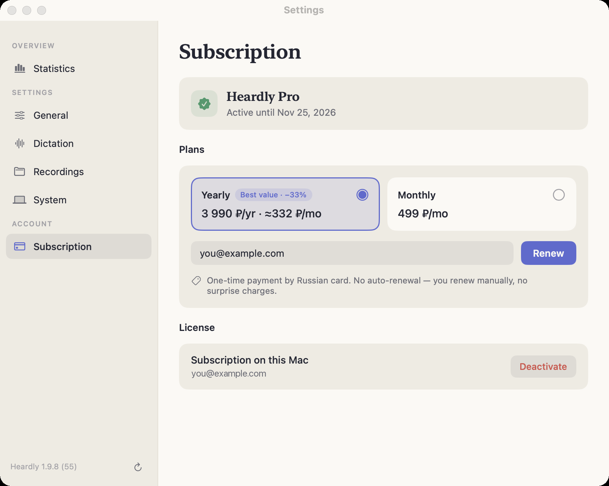

Бесплатно, пробный период и ProFree, trial and Pro
После установки две недели работают все функции. Дальше остаётся бесплатная версия: диктовка без лимита и по 40 минут в месяц на звонки и на файлы. Pro снимает лимиты.For the first two weeks everything is unlocked. After that you keep a free version: unlimited dictation and 40 minutes a month each for calls and for files. Pro removes the limits.
Три состоянияThree states
| СостояниеState | Что доступноWhat you get |
|---|---|
| Пробный периодTrial | 14 дней с момента первого запуска. Работает всё, карту вводить не нужно.14 days from first launch. Everything works, and no card is needed. |
| Бесплатная версияFree | Диктовка без лимита. Живая расшифровка звонков — 40 минут в месяц, расшифровка файлов — ещё 40 минут в месяц, это два отдельных счётчика. Экспорт в TXT и SRT.Unlimited dictation. Live call transcription gets 40 minutes a month and file transcription another 40 minutes a month, counted separately. Export to TXT and SRT. |
| Pro | Звонки и файлы без лимита, ИИ-панель с саммари в окне звонка, все восемь форматов экспорта и команда heardly для подключения к ИИ.Unlimited calls and files, the AI panel with a summary in the call window, all eight export formats and the heardly command for connecting to AI tools. |
Сколько стоитWhat it costs
| ГдеWhere | МесяцMonthly | ГодYearly |
|---|---|---|
| Россия и СНГRussia and CIS | 499 ₽ | 3 990 ₽ — это 332 ₽ в месяц3,990 ₽ — that is 332 ₽ a month |
| Остальные страныElsewhere | $9.99 | $79.99 — это $6.67 в месяц$79.99 — that is $6.67 a month |
Цена определяется по региону вашей системы. Оплата идёт в рублях: для карт вне СНГ сумма показывается в долларах, а списывается рублёвый эквивалент.
The price follows your system region. Payment is taken in roubles: outside the CIS the amount is shown in dollars and the rouble equivalent is charged.


Что происходит на лимитеWhat happens at the limit
Минуты обновляются раз в месяц. Диктовки лимит не касается.
Если минуты на звонки кончились посреди разговора, запись не оборвётся. Heardly допишет ещё до 20 минут, а то, что вышло сверх лимита, вычтет из следующего месяца. Новый звонок до обновления лимита уже не начнётся.
С файлами запаса нет: если файл длиннее, чем осталось минут, бесплатно его не расшифровать. Всё, что уже расшифровано, остаётся на месте: История, папка и экспорт в TXT и SRT работают как обычно.
The minutes renew once a month. The limit doesn’t apply to dictation.
If your call minutes run out mid-conversation, the recording won’t stop. Heardly keeps going for up to 20 more minutes and takes whatever went over the limit from next month. A new call won’t start until the limit renews.
Files get no such allowance: a file longer than the minutes you have left can’t be transcribed on the free plan. Everything already transcribed stays put: History, the folder and TXT and SRT export keep working as usual.
Как оформитьHow to subscribe
Откройте Настройки → Подписка и нажмите кнопку покупки. Понадобится email — на него оформляется подписка, и по нему же она потом восстанавливается на других устройствах, см. Лицензия и устройства.
Open Settings → Subscription and press the purchase button. You will need an email address — the subscription is issued to it, and it is also how you restore the subscription on other devices; see Licence and devices.